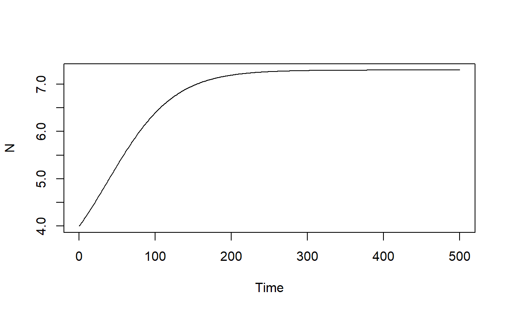

Empirical Evidence
Exercise (1)
The government has invited you to give a brief presentation assessing whether the current and projected future atmospheric CO2 concentrations have historical precedents in Earth’s past. Prepare your presentation by following the steps below.
- Download paleoclimate data of atmospheric CO2 concentration from here (Download Supplemental Data 1 (XLSX))
- Open
ea49_rae_suppl_data1.xlsxand go to sheetd11B_pH - Save the sheet as a
.csvfile - Read in the file in R using the
read.csv()command:
data <- read.csv("C:/Users/whatever/your/path/is/ea49_rae_suppl_data1.csv", header = TRUE)- The data column
xco2gives the atmospheric CO2 concentration in ppm - Make a scatterplot of [CO2] and Age:
myFile <- file.path("data", "ea49_rae_suppl_data1.csv")
data <- read.csv(myFile, header = TRUE)
age <- data$age / 1000 # Age in million years
co2 <- data$xco2
plot(age, co2, xlab = "Age (Ma)", ylab = "[CO2] (ppm)", xlim=rev(c(0, 70)))- How does the CO2 variation compare with the variation in global mean temperature plotted in Figure 2.11 on page 31?
- Estimate how high CO2 levels were during the early Eocene climate optimum
- Go to Figure 8.3 on page 138 and estimate the CO2 for the
year 2100 under the fossil fuel-intensive Shared Socioeconomic Pathway
SSP5-8.5. Add a horizontal line that shows the projected CO2
concentration
abline(h = xxx, col = "blue"). - The data that you are analyzing has been published by Rae et al (2022). The abstract states how far back in time one must go in order to find CO2 concentrations that correspond to today’s level. Read the abstract and verify their statement by adding a horizontal line that shows today’s CO2 levels.
myFile <- file.path("data", "ea49_rae_suppl_data1.csv")
data <- read.csv(myFile, header = TRUE)
age <- data$age / 1000
co2 <- data$xco2
plot(age, co2, xlab = "Age (Ma)", ylab = "[CO2] (ppm)", xlim=rev(c(0, 70)))
abline(h = 421, col = "red")- Improve the readability of your plot by adjusting the time window.
This can be done by changing the
xlim=rev(c(0, 70))to e.g.xlim=rev(c(0, 10)). Also, adjust the y-axis by addingylim = c(100,500).
myFile <- file.path("data", "ea49_rae_suppl_data1.csv")
data <- read.csv(myFile, header = TRUE)
age <- data$age / 1000
co2 <- data$xco2
plot(age, co2, xlab = "Age (Ma)", ylab = "[CO2] (ppm)", xlim=rev(c(0, 3.5)), ylim = c(100,500))
abline(h = 421, col = "red")Exercise (2)
You are a group of scientists who just returned from Antarctica where you have conducted ice core drilling to reconstruct temperature changes during earth’s history. You have been invited to share your results at the American Geophysical Union Fall Meeting. To prepare your presentation, follow the steps below.
Some background information: The original Vostock ice core data are provided by Petit et al (2000) (vostok.1999.temp.dat). The data are described here: Petit, J.R., Jouzel, J., Raynaud, D., Barkov, N.I., Barnola, J.M., Basile, I., Bender, M., Chappellaz, J., Davis, M., Delaygue, G. and Delmotte, M., 1999. Climate and atmospheric history of the past 420,000 years from the Vostok ice core, Antarctica. Nature, 399(6735), pp.429-436. I have prepared the data for you, so there is no need for downloading data.
Plot ice core depth versus age:
myFile <- file.path("data", "vostok.1999.temp.dat")
data <- read.table(myFile, header = TRUE)
plot(x = ___, y = ___/1000,
xlab = "Depth (m)",
ylab = "Age (thousands of years)",
type = "l")myFile <- file.path("data", "vostok.1999.temp.dat")
data <- read.table(myFile, header = TRUE)
plot(data$Depth, data$Age/1000,
xlab = "Depth (m)",
ylab = "Age (thousands of years)",
type = "l")How deep did you have to drill to obtain air bubbles that were trapped about 400,000 years ago?
Next, plot the relation between Deuterium and temperature.
myFile <- file.path("data", "vostok.1999.temp.dat")
data <- read.table(myFile, header = TRUE)
plot(data$Deuterium, data$Temperature,
xlab = "Deuterium",
ylab = "Temperature Anomlies (C)")- Deuterium is expressed as \(\delta D\) in ‰ with respect to Standard Mean Ocean Water (SMOW): \(\delta D_{ice} = \left( \frac{(D/H)_{sample}}{(D/H)_{SMOW}}-1 \right) \times 1,000\), where \(H\) refers to Protium.
- Explain what Deuterium is, what the values show, and why Deuterium and temperature are positively correlated.
- Next, plot how the temperature varies in time. To sort your plot
from 400,000 to present, use
xlim = rev(c(0, 400000)).
myFile <- file.path("data", "vostok.1999.temp.dat")
data <- read.table(myFile, header = TRUE)
plot(data$Age, data$Temperature,
xlab = "Age (thousands of years)",
ylab = "Temperature Anomlies (C)",
type = "l", xlim = rev(c(0, 400000)))- How many interglacial periods do you see?
- What periods are longer, glacial or interglacial?
- What happens faster, warming or cooling?
Below I am showing the same data as above, but I added a second line that shows [CO2] in red:

- Comparing both lines, does temperature follow CO2, or does CO2 follow temperature?
- Try to explain your answer using the concepts of forcing and feedback.
- Considering anthropogenic climate change, is CO2 a forcing or a feedback?
Exercise (3)
- Let’s plot the [CO2] paleoclimate data from the last 400,000 years and the recent [CO2] observations from the Mauna Loa Observatory together.
myFile <- file.path("data", "pastAndPresentCO2.txt")
data <- read.table(myFile, header = TRUE)
plot(x = ___/1000, y = ___, xlab = "Age (thousands of years)", ylab = "[CO2] (ppmv)")myFile <- file.path("data", "pastAndPresentCO2.txt")
data <- read.table(myFile, header = TRUE)
plot(data$Age/1000, data$CO2, xlab = "Age (thousands of years)", ylab = "[CO2] (ppmv)")- How does the current [CO2] trend compare to trends in the Earth’s past?
Radiation and Energy Balance
The energy of a photon (\(E\)) is a function of its wavelength (\(\lambda\)): \[E = h \frac{c}{\lambda}\] where \(h\) is Planck’s constant (\(h = 6.63 \times 10^{-34}\) J s) and \(c\) is the speed of light (\(c = 3 \times 10^8\) m s\(^{-1}\)). Plot the energy of a photon as a function of wavelength, ranging from 0.1 to 2.0 \(\mu\)m.
# constants
h <- ___ # Planck's constant (J s)
c <- ___ # speed of light (m s-1)
# variable
lambda <- ___ # wavelength (m)
# function
E <- ___
# plot
my.xlab <- "Wavelength ($mu$m)"
my.ylab <- "Energy of a photon (J)"
my.xlab <- latex2exp::TeX(my.xlab)
my.ylab <- latex2exp::TeX(my.ylab)
par(mar = c(5,5,1,1))
plot(x = lambda, y = E, type = "l", lty = 1, xlab = my.xlab, ylab = my.ylab)# constants
h <- 6.63 * 10^(-34) # Planck's constant (J s)
c <- 3 * 10^8 # speed of light (m s-1)
# variable
lambda <- seq(0.1,2,0.01) * 10^(-6) # wavelength (m)
# function
E <- h * c / lambda
# plot
my.xlab <- "Wavelength ($mu$m)"
my.ylab <- "Energy of a photon (J)"
my.xlab <- latex2exp::TeX(my.xlab)
my.ylab <- latex2exp::TeX(my.ylab)
par(mar = c(5,5,1,1))
plot(x = lambda, y = E, type = "l", lty = 1, xlab = my.xlab, ylab = my.ylab)Planck’s function of spectral irradiance is given as:
\[ I(\lambda) = \frac{2 \pi h c^2}{\lambda^5}\frac{1}{\exp\left( \frac{h c}{\lambda k_B T} \right)-1}\] Plot this function for wavelengths ranging from 0 to 1 \(\mu\)m and for different temperatures between 3000 and 6000 Kelvin.
# constants
h <- ___ # Planck's constant (J s)
kB <- ___ # Boltzmann constant (J K-1)
c <- ___ # speed of light (m s-1)
# variables
T <- ___ # temperature (K)
lambda <- ___ # wavelength (m)
# Planck's function
my.fun <- function(lambda, T){
I <- ___
return(I)
}
data <- outer(lambda, T, my.fun)
my.xlab <- "Wavelength ($mu$m)"
my.ylab <- "Spectral Irradiance (W m$^{-2} mu$m$^{-1}$)"
my.xlab <- latex2exp::TeX(my.xlab)
my.ylab <- latex2exp::TeX(my.ylab)
my.col <- rev(viridis::plasma(n = ncol(data)))
par(mar = c(5,5,1,1))
matplot(x = lambda * 10^6, y = data / 10^6, type = "l", lty = 1, col = my.col,
xlab = my.xlab, ylab = my.ylab)
legend.text <- paste("T =", T, "K", sep = " ")
legend("topright", legend = legend.text, pch = 16, col = my.col, bty = "n")# constants
h <- 6.63 * 10^(-34) # Planck's constant (J s)
kB <- 1.38 * 10^(-23) # Boltzmann constant (J K-1)
c <- 3 * 10^8 # speed of light (m s-1)
# variables
T <- seq(3000,6000, 500) # temperature (K)
lambda <- seq(0,2,0.01) * 10^(-6) # wavelength (m)
# Planck's function
my.fun <- function(lambda, T){
termI <- 2 * pi * h * c^2 / lambda^5
termII <- exp(h * c / (lambda * kB * T)) - 1
I <- termI / termII
return(I)
}
data <- outer(lambda, T, my.fun)
my.xlab <- "Wavelength ($mu$m)"
my.ylab <- "Spectral Irradiance (W m$^{-2} mu$m$^{-1}$)"
my.xlab <- latex2exp::TeX(my.xlab)
my.ylab <- latex2exp::TeX(my.ylab)
my.col <- rev(viridis::plasma(n = ncol(data)))
par(mar = c(5,5,1,1))
matplot(x = lambda * 10^6, y = data / 10^6, type = "l", lty = 1, col = my.col,
xlab = my.xlab, ylab = my.ylab)
legend.text <- paste("T =", T, "K", sep = " ")
legend("topright", legend = legend.text, pch = 16, col = my.col, bty = "n")Plot Wien’s law for a temperature range of 100 to 6000 Kelvin.
T <- ___
lambdaMax <- ___
my.xlab <- "Temperature (K)"
my.ylab <- "Wavelength ($mu$m)"
my.xlab <- latex2exp::TeX(my.xlab)
my.ylab <- latex2exp::TeX(my.ylab)
par(mar = c(5,5,1,1))
plot(x = T, y = lambdaMax, type = "l", lty = 1, xlab = my.xlab, ylab = my.ylab)T <- seq(100,6000,1)
lambdaMax <- 2897 / T
my.xlab <- "Temperature (K)"
my.ylab <- "Wavelength ($mu$m)"
my.xlab <- latex2exp::TeX(my.xlab)
my.ylab <- latex2exp::TeX(my.ylab)
par(mar = c(5,5,1,1))
plot(x = T, y = lambdaMax, type = "l", lty = 1, xlab = my.xlab, ylab = my.ylab)Using the Stefan-Boltzmann law, show how the power per area emitted by a body as a function of temperature, ranging from 100K to 6000K.
# constant
sigma <- ___ # Stefan-Boltzmann constant (W m-2 K-4)
# variable
T <- seq(100,6000,1)
# function
E <- ___
my.xlab <- "Temperature (K)"
my.ylab <- "Irradiance (W m$^{-2}$)"
my.xlab <- latex2exp::TeX(my.xlab)
my.ylab <- latex2exp::TeX(my.ylab)
par(mar = c(5,5,1,1))
plot(x = T, y = E, type = "l", lty = 1, xlab = my.xlab, ylab = my.ylab)# constant
sigma <- 5.67 * 10^(-8) # Stefan-Boltzmann constant (W m-2 K-4)
# variable
T <- seq(100,6000,1)
# function
E <- sigma * T^4
my.xlab <- "Temperature (K)"
my.ylab <- "Irradiance (W m$^{-2}$)"
my.xlab <- latex2exp::TeX(my.xlab)
my.ylab <- latex2exp::TeX(my.ylab)
par(mar = c(5,5,1,1))
plot(x = T, y = E, type = "l", lty = 1, xlab = my.xlab, ylab = my.ylab)A sphere with a radius of 1m has temperature of 100\(^{\circ}\)C. How much power is it radiating?
# constant
sigma <- 5.67 * 10^(-8) # Stefan-Boltzmann constant (W m-2 K-4)
radius <- 1 # radius of sphere (m)
# variable
T <- 100 + 273.15 # temperature (K)
A <- 4 * pi * radius^2
E <- sigma * T^4 # W m-2
P <- A * E
print(P)Consider two stars that have the spectra shown below.

The surface of our sun has a mean temperature of about 5778K. The sun’s radius is about 695,700 km. How much power is our sun radiating?
# constant
sigma <- 5.67 * 10^(-8) # Stefan-Boltzmann constant (W m-2 K-4)
radius <- 6.957 * 10^8 # 7 * 10^8 # radius of sun (m)
# variables
T <- 5778 # temperature (K)
A <- 4 * pi * radius^2
# Stefan-Boltzmann Law
E <- sigma * T^4 # (W m-2)
# Total power
P <- A * E # (W)
print(P)What is the characteristic wavelength of the sun expressed in micro meters?
# variable
T <- 5778 # temperature (K)
lambda <- 2.897 * 10^(-3) / T # (m)
lambda <- lambda * 10^6 # (micro meters)
print(lambda)Imagine that the sun had a radius twice as large as it does at present, but the sun emitted the same total amount of energy. What temperature would the sun have to be?
# constant
sigma <- 5.67 * 10^(-8) # Stefan-Boltzmann constant (W m-2 K-4)
radius <- 6.957 * 10^8 # radius of sun (m)
# variable
T1 <- 5778 # temperature (K)
A <- 4 * pi * radius^2
E <- sigma * T1^4 # W m-2
P <- A * E # this is the power with the actual sun radius
# variable
denominator <- sigma * 4 * pi * (2 * radius)^2
T <- (P / denominator)^(1/4)
print(T)Calculate the solar constant. Assume that the sun’s radius equals 6.957 \(\times\) 10\(^8\) m and the temperature of the photosphere equals 5778K.
# constant
sigma <- 5.67 * 10^(-8) # Stefan-Boltzmann constant (W m-2 K-4)
radius <- 6.957 * 10^8 # radius of sun (m)
# variables
T <- 5778 # temperature (K)
A <- 4 * pi * radius^2
# Stefan-Boltzmann Law
E <- sigma * T^4 # (W m-2)
# Total power
P <- A * E # (W)
# Earth-sun distance
earth_sun_distance <- 1.496 * 10^11 # (m)
A2 <- 4 * pi * earth_sun_distance^2
S <- P / A2 # W m-2
print(S)Estimate the earth’s surface temperature using the n-layer model and the following inputs: solar constant: 1360 W m-2, planetary albedo = 0.3 (-), n = 0.65.
# constant
sigma <- 5.67 * 10^(-8) # Stefan-Boltzmann constant (W m-2 K-4)
S <- 1360 # Solar constant (W m-2)
alpha <- 0.3 # planetary albedo (-)
n <- 0.65
# Equation 4.5, p. 62
num <- (n + 1) * S * (1 - alpha)
denom <- 4 * sigma
T <- (num / denom)^0.25 #surface temperature (K)
print(T)Using the same data as in the exercise above, calculate the impact of the natural greenhouse gas effect on the earth’s surface temperature.
# constant
sigma <- 5.67 * 10^(-8) # Stefan-Boltzmann constant (W m-2 K-4)
S <- 1360 # Solar constant (W m-2)
alpha <- 0.3 # planetary albedo (-)
# temperature without GHG (Equation 4.5, p. 62)
n <- 0
num <- (n + 1) * S * (1 - alpha)
denom <- 4 * sigma
T1 <- (num / denom)^0.25 #surface temperature (K)
# temperature with GHG (Equation 4.5, p. 62)
n <- 0.65
num <- (n + 1) * S * (1 - alpha)
denom <- 4 * sigma
T2 <- (num / denom)^0.25 #surface temperature (K)
# Difference
deltaT <- T2 - T1
print(deltaT)The Carbon Cycle
Exercise (1)
- Make a 2-box model that simulates the exchange of carbon between the atmosphere and the biosphere. For the initial time step, put all the carbon into the atmosphere and run the model until it reaches equilibrium. Build your model based on Figure 1 and Table 1 provided by Avenhaus, R., S. Fenyi, and H. Frick. 1979. “Box Models for the CO2 Cycle of the Earth.” Environment International 2 (4): 379–85..
# Reference:
# Avenhaus, R., S. Fenyi, and H. Frick. 1979. “Box Models for the CO2 Cycle of the Earth.” Environment International 2 (4): 379–85.
library(deSolve)
# Define the box model function
carbon_model <- function(time, state, parameters) {
with(as.list(c(state, parameters)), {
# Parameters
k_ab <- ___ # Transfer rate from atmosphere to biosphere measured in yr-1 (Avenhaus et al., 1979; Table 1)
k_ba <- ___ # Transfer rate from biosphere to atmosphere measured in yr-1 (Avenhaus et al., 1979; Table 1)
# ODEs: Flux = sources minus sinks
dA_dt <- ___
dB_dt <- ___
# Return the derivatives
return(list(c(dA_dt, dB_dt)))
})
}
# Initial state (Avenhaus et al., 1979; Table 1)
Af <- 1 #
Bf <- 1.2 * Af
# Let's put all the carbon into the atmosphere
A <- Af + Bf
B <- 0
initial_state <- c(A = A, B = B)
# Time points for simulation
times <- seq(0, 150, by = 0.1)
# Parameters (not used in this simple example)
parameters <- list()
# Solve the ODEs
output <- ode(y = initial_state, times = times, func = carbon_model, parms = parameters)
output <- data.frame(output)
# Plot the results
matplot(output$time, output[, c("A", "B")], type = "l", lty = 1, col = c("blue", "green"),
xlab = "Time", ylab = "Carbon Amount",
main = "Carbon Exchange between Atmosphere and Biosphere")
legend("topright", legend = c("Atmosphere", "Biosphere"), col = c("blue", "green"), lty = 1, bty = "n")# Reference:
# Avenhaus, R., S. Fenyi, and H. Frick. 1979. “Box Models for the CO2 Cycle of the Earth.” Environment International 2 (4): 379–85.
library(deSolve)
# Define the box model function
carbon_model <- function(time, state, parameters) {
with(as.list(c(state, parameters)), {
# Exchange coefficients in yr-1 (Avenhaus et al., 1979; Table 1)
k_ab <- 1/33
k_ba <- 1/40
# ODEs: Flux = sources minus sinks
dA_dt <- k_ba * B - k_ab * A
dB_dt <- k_ab * A - k_ba * B
# Return the derivatives
return(list(c(dA_dt, dB_dt)))
})
}
# Initial state (Avenhaus et al., 1979; Table 1)
ya <- 1
yb <- 1.2 * ya
# Let's put all the carbon into the atmosphere
A <- ya + yb
B <- 0
initial_state <- c(A = A, B = B)
# Time points for simulation
times <- seq(0, 150, by = 0.1)
# Parameters (not used in this simple example)
parameters <- list()
# Solve the ODEs
output <- ode(y = initial_state, times = times, func = carbon_model, parms = parameters)
output <- data.frame(output)
# Plot the results
matplot(output$time, output[, c("A", "B")], type = "l", lty = 1, col = c("blue", "green"),
xlab = "Time (years)", ylab = "Carbon amount / atmospheric pool (-)")
legend("topright", legend = c("Atmosphere", "Biosphere"), col = c("blue", "green"), lty = 1, bty = "n")Exercise (2)
- Extend the model you built above by adding two additional pools, one for the ocean mixed layer and one for the ocean deep layer.
# Reference:
# Avenhaus, R., S. Fenyi, and H. Frick. 1979. “Box Models for the CO2 Cycle of the Earth.” Environment International 2 (4): 379–85.
library(deSolve)
# Define the box model function
carbon_model <- function(time, state, parameters) {
with(as.list(c(state, parameters)), {
# Exchange coefficients in yr-1 (Avenhaus et al., 1979; Table 1)
k_ab <- 1/33
k_ba <- 1/40
k_am <- 1/5
k_ma <- 1/6
k_md <- 1/6.2
k_dm <- 1/300
# ODEs: Flux = sources minus sinks
dA_dt <- k_ba * B + k_ma * M - k_ab * A - k_am * A
dB_dt <- k_ab * A - k_ba * B
dM_dt <- k_am * A + k_dm * D - k_ma * M - k_md * M
dD_dt <- k_md * M - k_dm * D
# Return the derivatives
return(list(c(dA_dt, dB_dt, dM_dt, dD_dt)))
})
}
# Initial state
# The pool size is estimated by Craig
ya <- 1
yb <- 1.21 * ya
ym <- 1.2 * ya
yd <- 58.06 * ya
A <- ya + yb + ym + yd
B <- 0
M <- 0
D <- 0
initial_state <- c(A = A, B = B, M = M, D = D)
# Time points for simulation
times <- seq(0, 300, by = 0.1)
# Parameters (not used in this simple example)
parameters <- list()
# Solve the ODEs
output <- ode(y = initial_state, times = times, func = carbon_model, parms = parameters)
output <- data.frame(output)
# Plot the results
matplot(output$time, output[, c("A", "B", "M", "D")], type = "l", lty = 1, col = c("blue", "green", "magenta", "black"),
xlab = "Time (years)", ylab = "Carbon amount / atm. pool (-)")
legend("right", legend = c("Atmosphere", "Biosphere", "Ocean Mixed Layer", "Ocean Deep Layer"), col = c("blue", "green", "magenta", "black"), lty = 1, bty = "n")Exercise (3)
- Next, run the same model, but with the pool sizes provided in our textbook in Figure 5.2 on page 75.
library(deSolve)
# Define the box model function
carbon_model <- function(time, state, parameters) {
with(as.list(c(state, parameters)), {
# Exchange coefficients in yr-1 (Avenhaus et al., 1979; Table 1)
k_ab <- 110/864
k_ba <- 110/2150
k_am <- 60/864
k_ma <- 60/900
k_md <- 100/900
k_dm <- 100/37100
# ODEs: Flux = sources minus sinks
dA_dt <- k_ba * B + k_ma * M - k_ab * A - k_am * A
dB_dt <- k_ab * A - k_ba * B
dM_dt <- k_am * A + k_dm * D - k_ma * M - k_md * M
dD_dt <- k_md * M - k_dm * D
# Return the derivatives
return(list(c(dA_dt, dB_dt, dM_dt, dD_dt)))
})
}
# Initial state
# The pool sizes
ya <- 864
yb <- 2150
ym <- 900
yd <- 37100
A <- ya + yb + ym + yd
B <- 0
M <- 0
D <- 0
initial_state <- c(A = A, B = B, M = M, D = D)
# Time points for simulation
times <- seq(0, 500, by = 0.1)
# Parameters (not used in this simple example)
parameters <- list()
# Solve the ODEs
output <- ode(y = initial_state, times = times, func = carbon_model, parms = parameters)
output <- data.frame(output)
# Plot the results
matplot(output$time, output[, c("A", "B", "M", "D")], type = "l", lty = 1, col = c("blue", "green", "magenta", "black"),
xlab = "Time (years)", ylab = "Carbon amount (GtC)")
legend("right", legend = c("Atmosphere", "Biosphere", "Ocean Mixed Layer", "Ocean Deep Layer"), col = c("blue", "green", "magenta", "black"), lty = 1, bty = "n")Exercise (4)
- Next, let’s emit 10,000 GtC to the atmosphere. Show how the carbon pool sizes changes in response. To do this, choose the currently estimated carbon pool sizes as initial values and add 10,000 GtC to the atmosphere.To contrast the resulting carbon pools, add horizontal lines of the current pool sizes to your graph:
abline(h = ya, col = "blue", lty = 2)
abline(h = yb, col = "green", lty = 2)
abline(h = ym, col = "magenta", lty = 2)
abline(h = yd, col = "black", lty = 2)- Enhance the readability of your Figure by reducing the y-axis range to a maximum value of 7000 GtC:
ylim = c(0, 7000)Change the length of the time axis to evaluate whether the amount of carbon in the atmosphere will ever return to its initial value.
What is the main limitation of this approach?
library(deSolve)
# Define the box model function
carbon_model <- function(time, state, parameters) {
with(as.list(c(state, parameters)), {
# Exchange coefficients in yr-1 (Avenhaus et al., 1979; Table 1)
k_ab <- 110/864
k_ba <- 110/2150
k_am <- 60/864
k_ma <- 60/900
k_md <- 100/900
k_dm <- 100/37100
# ODEs: Flux = sources minus sinks
dA_dt <- k_ba * B + k_ma * M - k_ab * A - k_am * A
dB_dt <- k_ab * A - k_ba * B
dM_dt <- k_am * A + k_dm * D - k_ma * M - k_md * M
dD_dt <- k_md * M - k_dm * D
# Return the derivatives
return(list(c(dA_dt, dB_dt, dM_dt, dD_dt)))
})
}
# Initial state
# The pool sizes
ya <- 864
yb <- 2150
ym <- 900
yd <- 37100
# emissions (GtC)
ye <- 10000
A <- ya + ye
B <- yb
M <- ym
D <- yd
initial_state <- c(A = A, B = B, M = M, D = D)
# Time points for simulation
times <- seq(0, 500, by = 0.1)
# Parameters (not used in this simple example)
parameters <- list()
# Solve the ODEs
output <- ode(y = initial_state, times = times, func = carbon_model, parms = parameters)
output <- data.frame(output)
# Plot the results
matplot(output$time, output[, c("A", "B", "M", "D")], type = "l", lty = 1, col = c("blue", "green", "magenta", "black"),
xlab = "Time (years)", ylab = "Carbon amount (GtC)", ylim = c(0,3000))
abline(h = ya, col = "blue", lty = 2)
abline(h = yb, col = "green", lty = 2)
abline(h = ym, col = "magenta", lty = 2)
abline(h = yd, col = "black", lty = 2)
legend("topright", legend = c("Atmosphere", "Biosphere", "Ocean Mixed Layer", "Ocean Deep Layer"), col = c("blue", "green", "magenta", "black"), lty = 1, bty = "n")Climate Sensitivity
Exercise (1)
The Earth usually receives about 238 W m–2 from the sun. The Canadian Space Agency has detected that the sun has instantaneously brightened by 1 percent. The government has contacted you to estimate how the global mean surface temperature will change in response. Address the government’s request by answering the questions below.
- What is the corresponding radiative forcing associated with a 1% increase in solar luminosity?
- How much warming would this radiative forcing cause?
- How fast would the earth warm? Express your answer in K per century. Consider the large heat capacity of our climate system, which is about 6 \(\times\) 1024 J K-1.
Exercise (2)
Imagine a planet with a simple biosphere that consists of two species of daisy flowers. One species is white, while the other is black. The growth rate of the daisies depends only on temperature, where black daisies prefer colder temperatures, while white daisies prefer warm temperatures. James Lovelock and Andrew Watson developed a mathematical model referred to as Daisyworld that illustrates how the relation solar luminosity and global mean temperature is affected by the two daisy species (Watson and Lovelock, 1983).
- Read the abstract of the paper
- Run daisyworld by hitting the run code button below (source code)
- Explain the relationship between solar luminosity and surface temperature
- Daisyworld depends on a number of parameter values. Change the albedo values in a way that reduces the stability of global mean surface temperature
parameters <- list(
L = 1, # solar luminosity
gamma = 0.3, # death rate
parabolic = 0.003265,
T_opt = 22.5,
S = 917, # SI! In fig 1, W&L use ergs/cm^2s FFS
sigma = 5.670374419e-8, # stefan's constant: SI
triple_point = 273, # actually 273.15
Ag = 0.50, # albedo of ground
Aw = 0.75, # albedo of white daisies
Ab = 0.25, # albedo of black daisies
q = NA,
qdash = 20, # caption in figure 1
p = 1.0 # proportion of fertile ground, fig 1
)
L <- seq(from=0.6,to=2,by=0.02)
M <- matrix(0,length(L),4)
for(i in seq_along(L)){
M[i,] <- daisy(parameters,L=L[i])
}
colnames(M) <- c("L","W","B","T_e")
plot(T_e~L,data=M, type='l', col = "blue", xlab = "Solar Luminosity (-)", ylab = "Temperature (C)")
plot(W~L,data=M, type='l', col = "green", xlab = "Solar Luminosity (-)", ylab = "Area (%)")
lines(B~L, data=M, type='l', col = "black")
legend("topright", c("White Daisies", "Black Daisies"), col = c("green", "black"), pch = 16, bty = "n")Exercise (3)
This exercise illustrates the concepts of equilibrium points and stability. Consider the following growth model: \[ \frac{dN}{dt} = r_i \times N \times \left( 1 - \frac{N}{K} \right) - q \times \frac{N}{N + k_s}\] The first term expresses the growth of a species, while the second term represents the mortality. N is the species density, ri is the rate of increase, K is the carrying capacity, q is the harvesting rate, and ks is the half-saturation density (ri = 0.05, K = 10, q = 0.1, ks = 0.1). We can can solve this ordinary differential equation to plot how specie density changes in time. To do this, we must define the initial number of species (N).
- Setting N = 4 yields:

- Setting N = 2 yields:

You see that the steady state depends on the initial value of N. Find out how many equilibria the growth model has, and whether they are stable or unstable. You can do this graphically by plotting the change of N (dN/dt) (y-axis) for different values of N ranging from 1 to 8 (x-axis). As parameter values, choose ri = 0.05, K = 10, q = 0.1, and ks = 0.1.
ri <- 0.05
K <- 10
q <- 0.1
ks <- 0.1
N <- seq(0,10,0.1)
dNdt <- ri * N * (1 - N/K) - q * N / (N + ks)
plot(x = N, y = dNdt, type = "l")
abline(h=0, lty = 2)- Identify the equilibrium points
- Are they stable or unstable?
- What equilibrium value do you get when setting N = 9?
- Test your answer by changing
initial_conditions <- c(N = 2)toinitial_conditions <- c(N = 9)in the code below.
library(deSolve)
# Define the ODE function
ode_function <- function(t, N, parameters) {
with(as.list(c(parameters, N)), {
dNdt <- ri * N * (1 - N / K) - q * N / (N + ks)
return(list(dNdt))
})
}
# Set up parameter values and initial conditions
parameters <- c(ri = 0.05, K = 10, q = 0.1, ks = 0.1)
initial_conditions <- c(N = 2)
# Set up time points for integration
time_points <- seq(0, 500, by = 1)
# Use the ode function to solve the ODE
solution <- ode(y = initial_conditions, times = time_points, func = ode_function, parms = parameters)
# Plot the solution
plot(solution, type = "l", xlab = "Time", ylab = "N", main = NA)- Run the code above for different N values to see whether you end up at the equilibrium value that you are expecting.
Exercise (4)
This exercise illustrates the concept of bifurcation. We will stick with our growth model defined above, but we are going to change the value of one of the parameters. Use your code from the exercise above where you plot the change of N (dN/dt) (y-axis) for different values of N ranging from 1 to 10 (x-axis). Now plot the results for different values of ri, ranging from 0.01 to 0.15. How do the equilibria change?
K <- 10
q <- 0.1
ks <- 0.1
N <- seq(0, 10, 0.1)
ri <- seq(0.01, 0.15, 0.01)
my.fun <- function(N, ri){
dNdt <- ___
return(dNdt)
}
data <- outer(N, ri, my.fun)
my.col <- rev(viridis::plasma(n = ncol(data)))
par(mar = c(5,5,1,1))
matplot(x = N, y = data, type = "l", lty = 1, col = my.col, xlab = "N", ylab = "dN/dt")
abline(h = 0)K <- 10
q <- 0.1
ks <- 0.1
N <- seq(0, 10, 0.1)
ri <- seq(0.01, 0.15, 0.01)
my.fun <- function(N, ri){
dNdt <- ri * N * (1 - N/K) - q * N / (N + ks)
return(dNdt)
}
data <- outer(N, ri, my.fun)
my.col <- rev(viridis::plasma(n = ncol(data)))
par(mar = c(5,5,1,1))
matplot(x = N, y = data, type = "l", lty = 1, col = my.col, xlab = "N", ylab = "dN/dt")
abline(h = 0)Additional exercises
The final temperature response to an initial warming can be expressed as \(\Delta T_f = \frac{\Delta T_i}{(1-g)}\). Plot the final temperature response as a function of the feedback strength g. Judging from your plot, how large does g need to be in order to reach a final temperature response of 3 K?
dTi <- 1.1 # K
g <- seq(-0.8, 0.8, 0.01)
dTf <- dTi / (1-g)
my.ylab <- latex2exp::TeX("$Delta T_f$ (K)")
plot(g, dTf, type = "l", xlab = "g (-)", ylab = my.ylab, las = 1)
legend("topleft", paste("Initial warming = ", dTi, "K", sep = " "), bty = "n")
abline(h = 3, lty = 2)
abline(v = 0.63, lty = 2)The radiative forcing in response to atmospheric CO2 concentration can be estimated as follows: \(RF = 5.35 \text{ W m}^{-2}\times \ln(C/C_0)\). Plot this function and show what the radiative forcing is for doubling the preindustrial CO2 concentration.
C0 <- 280
C <- seq(280, 1000, 1)
A <- 5.35 # W m-2
RF <- A * log(C/C0)
my.ylab <- latex2exp::TeX("Radiative Forcing (W m$^{-2}$)")
my.xlab <- latex2exp::TeX("Atmospheric CO$_2$ concentration (ppmv)")
par(mar = c(5,5,1,1))
plot(C, RF, type = "l", las = 1, xlab = my.xlab, ylab = my.ylab)
abline(h = 3.7, lty = 2)
abline(v = 560, lty = 2)Past and Future Changes
Exercise (1)
The code below plots a time series of the daily mean incoming solar radiation (W m-2) at the top of the atmosphere (TOA) during summer solstice (Jun 20) at the latitude of 65 Degrees North. The horizontal line gives the corresponding value for the year 1950 (i.e. year zero), which I obtained from here. The vertical line gives the time of the present (2024).
The government has asked you to evaluate to what extent the Milankovitch cycle affects our current climate. To prepare your response, answer the following questions.
- By how much has the insolation changed during the Holocene?
- Did the insolation increase or decrease since the onset of the industrial revolution?
- Looking into the future, how will the Milankovitch cycle affect warming over the next 1000 years?
- How large is this affect compared to a radiative forcing of 8.5 W m-2?
You can answer these questions by running the code below for
different time periods defined as
year <- seq(from = -400000, to = 0, by = 1000)
library(palinsol)
year <- seq(from = -10^6, to = 0, by = 1000)
# year <- seq(from = -10000, to = 0, by = 10)
latitude <- 65 * pi/180 # (radians)
insolation <- function(times, astrosol=ber78,...)
sapply(times, function(tt) Insol(orbit=astrosol(tt), lon = pi/2, lat = latitude))
# Daily mean incoming solar radiation at TOA (W/m2)
isl <- insolation(year, ber78)
plot(year, isl, typ='l',
main = "Daily mean solar radiation for June 20 (Solstice)",
xlab = "Years",
ylab = "Insolation at TOA (W/m2)")
legend("topleft", paste("Latitude =", latitude * 180/pi, "N"), bty = "n")
abline(h = 480.05, col = "grey")
abline(v=2024-1950)Exercise (2)
In this exercise you will run a simple global climate model called Hector. Hector is the default carbon cycle module for the integrated assessment model GCAM (Global Change Assessment Model). The section below will show you how to run Hector.
- Run the model and look at results
library(hector)
ini_file <- system.file("input/hector_ssp585.ini", package = "hector")
# Initialize a Hector core. The core is a self-contained object that contains information about all of Hector’s inputs and outputs
core <- newcore(ini_file)
# Run the model
run(core)
# Obtain the results
results_default <- fetchvars(core, 1950:2300)
# Have a look at the results
head(results_default)- Plot model output
library(hector)
ini_file <- ___
# Initialize a Hector core. The core is a self-contained object that contains information about all of Hector’s inputs and outputs
core <- ___
# Run the model
run(___)
# Obtain the results
results_default <- ___
# Rename your results "df" (data frame). This is just for giving it a shorter name
df <- results_default
# There are four output variables
categories <- unique(df$variable)
# Set up a layout for multiple plots
par(mfrow = c(2,2), mar = c(4,4,1,1))
# Loop through each category and create a plot for each category
for (i in 1:length(categories)) {
# Subset data frame
data <- df[df$variable == categories[i], ]
unit <- unique(data$units)
# Plot data
plot(x = data$year, y = data$value, ylab = paste(categories[i], unit), xlab = "Year", type = "l")library(hector)
ini_file <- system.file("input/hector_ssp585.ini", package = "hector")
# Initialize a Hector core. The core is a self-contained object that contains information about all of Hector’s inputs and outputs
core <- newcore(ini_file)
# Run the model
run(core)
# Obtain the results
results_default <- fetchvars(core, 1950:2300)
# Rename your results "df" (data frame). This is just for giving it a shorter name
df <- results_default
# There are four output variables
categories <- unique(df$variable)
# Set up a layout for multiple plots
par(mfrow = c(2,2), mar = c(4,4,1,1))
# Loop through each category and create a plot for each category
for (i in 1:length(categories)) {
# Subset data frame
data <- df[df$variable == categories[i], ]
unit <- unique(data$units)
# Plot data
plot(x = data$year, y = data$value, ylab = paste(categories[i], unit), xlab = "Year", type = "l")
}- Next, let’s change the CO2 fertilization effect
library(hector)
ini_file <- system.file("input/hector_ssp585.ini", package = "hector")
# Initialize a Hector core. The core is a self-contained object that contains information about all of Hector’s inputs and outputs
core <- newcore(ini_file)
# Run the model
run(core)
# The current value for beta is
beta <- fetchvars(core, NA, BETA())
# Let's increase this to 0.5
setvar(core, NA, BETA(), 0.80, "(unitless)")
# Reset the core with the new value
reset(core)
# run the model
run(core)
# Get the results
results_beta <- fetchvars(core, 1950:2300)- Show the impact by plotting the results from the default run and from the new run
# add code here
df01 <- results_default
df02 <- results_beta
categories <- unique(df01$variable)
# Set up a layout for multiple plots
par(mfrow = c(2,2), mar = c(4,4,1,1))
# Loop through each category and create a plot for each category
for (i in 1:length(categories)) {
# Subset data frame
data <- df01[df01$variable == categories[i], ]
unit <- unique(data$units)
# Plot data
plot(x = data$year, y = data$value, ylab = paste(categories[i], unit), xlab = "Year", type = "l")
data <- df02[df02$variable == categories[i], ]
lines(x = data$year, y = data$value, type = "l", col = "red")
abline(v = 2100)
}library(hector)
ini_file <- system.file("input/hector_ssp585.ini", package = "hector")
# Initialize a Hector core.
core <- newcore(ini_file)
# Run the model
run(core)
# Obtain the results
results_default <- fetchvars(core, 1950:2300)
# The current value for beta is
beta <- fetchvars(core, NA, BETA())
# Let's increase this to 0.5
setvar(core, NA, BETA(), 0.80, "(unitless)")
# Reset the core with the new value
reset(core)
# run the model
run(core)
# Get the results
results_beta <- fetchvars(core, 1950:2300)
df01 <- results_default
df02 <- results_beta
categories <- unique(df01$variable)
# Set up a layout for multiple plots
par(mfrow = c(2,2), mar = c(4,4,1,1))
# Loop through each category and create a plot for each category
for (i in 1:length(categories)) {
# Subset data frame
data <- df01[df01$variable == categories[i], ]
unit <- unique(data$units)
# Plot data
plot(x = data$year, y = data$value, ylab = paste(categories[i], unit), xlab = "Year", type = "l")
data <- df02[df02$variable == categories[i], ]
lines(x = data$year, y = data$value, type = "l", col = "red")
abline(v = 2100)
}- Have a look at the figures and try to explain them. What is the impact of increasing beta?